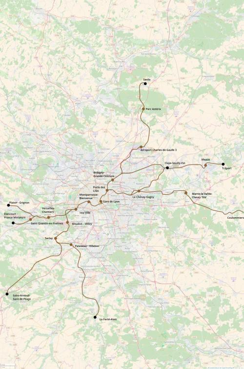

RER G
Senlis / Trilport / Claye-Souilly / Coulommiers - Plaisir-Grignon / Élancourt / Saint-Arnoult-en-Yvelines / La Ferté-Alais
Le RER G serait une nouvelle ligne de RER orientée nord-est - sud-ouest pour mieux mailler le réseau de transports en commun d'Île-de-France.
Au nord, il incluerait une nouvelle liaison ferroviaire Senlis - Parc Astérix - Aéroport de Roissy - Paris. À l'est il desservirait Claye-Souilly, Meaux, et incluerait une nouvelle liaison Coulommiers - Chessy TGV - Paris.
L'entrée dans Paris se ferait par la porte des Lilas et permettrait d'ajouter deux gares dans une partie de l'est de Paris qui est actuellement à l'écart du réseau de RER. Ensuite le RER G rejoindrait la gare de Lyon qu'il desservirait par une extension de cette gare à l'est. Ensuite entre gare de Lyon et gare Montparnasse le RER G partagerait ses voies avec la liaison TGV/grandes-lignes Montparnasse - gare de Lyon - gare du Nord en suivant un tracé globalement parallèle à la ligne 6 puis à la ligne 4 du métro.
Après Montparnasse le RER G rejoindrait la rue de la Convention pour ensuite la remonter jusqu'à la gare de Balard, point de sortie de Paris et nouveau pôle de transport pour desservir le 15e arrondissement et le nord d'Issy-les-Moulineaux, en correspondance avec les tramways T2 et T3 en plus de la ligne 8 et de la Petite Ceinture Express.
Après être sorti de Paris le RER G desservirait le pôle de correspondances d'Issy - Ville puis se séparerait en deux branches.
La branche ouest traverserait la forêt de Meudon dans un tunnel parallèle à celui de la ligne C pour rejoindre Viroflay-Rive-Gauche et reprendre à partir de cette gare une partie de la desserte actuellement intégrée au transilien N.
Le branche sud monterait vers Vélizy et longerait la nationale 118 de Vélizy juqu'aux Ulis desservant Le pôle de Vélizy 2 et le plateau de Saclay. Ensuite le tracé partirait vers l'ouest pour suivre l'ancienne ligne d'Ouest-Ceinture à Chartres jusqu'à Saint-Arnoult-en-Yvelines. En plus une ligne nouvelle se détacherait de la branche principale sud pour desservir le campus de Palaiseau et partir vers la Ferté-Alais ce qui permettra de mieux relier l'Essonne au pôle technologique d'Orsay - Gif - Saclay
Cartes

Cliquer pour agrandir
{kind=link}

Cliquer pour agrandir
Projets associés à cette ligne
- RER G Tronc commun
- Tracé détaillé de la section principale du RER G entre Drancy et Orsay-Universités.
- RER G Senlis
- Tracé détaillé de l'extension du RER G vers Senlis qui passe par le Parc Astérix et l'aéroport de Roissy.
- RER G Meaux par Aulnay
- Tracé détaillé de la section Aulnay-sous-Bois - Claye-Souilly - Meaux du RER G, cette section est commune au RER B jusqu'à Villeparisis et à la tangentielle Val-d'Oise de Claye à Meaux.
- RER G Claye-Souilly
- Tracé détaillé de la section du RER G Porte des Lilas - Rosny - Chelles - Claye-Souilly.
- RER G Coulommiers
- Tracé détaillé de la section Gagny - Coulommiers via Chessy-TGV.
- RER G La Ferté-Alais
- Tracé détaillé de la section Orsay-Universités - La Ferté-Alais Via Saulx-les-Chartreux et Brétigny.
- RER G Saint-Arnoult-en-Yvelines
- Tracé détaillé de la section Osray-Universités - Saint-Arnoult-en-Yvelines via Les Ulis et Limours.
- RER G Saint-Quentin-en-Yvelines
- Tracé détaillé de la section Issy - Saint-Quentin-en-Yvelines du RER G, partagée en grande partie avec le RER C.
- RER G Plaisir
- Tracé détaillé de la section Saint-Cyr - Plaisir-Grignon du RER G. Cette section correspond à l'intégration d'un service du transilien N au RER G.
Si vous êtes intéressé par les projets associés à cette ligne (re-)partagez cette page sur les réseaux sociaux ou par courriel ou parlez-en autour de vous.
Si vous souhaitez travailler à la concrétisation de ces projets, passez à l'action et contactez nous.
Commenter